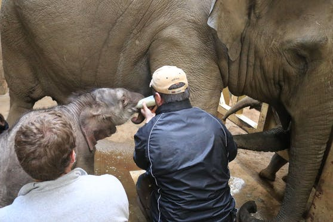

Elefantenkuh "Sita" brachte am vergangenen Donnerstag ihr erstes Jungtier im Zoo Osnabrück (Deutschland) zur Welt. Der kleine Elefantenbulle schien kräftig und gesund zu sein, verhielt sich aber dennoch merkwürdig weil er einfach nicht trinken wollte. Die Elefantenmama zeigte nach anfänglicher Scheu schnell Interesse an ihrem Nachwuchs und berüsselte ihn zärtlich. Trotz aller Bemühungen mussten die Tierpfleger in Absprache mit den Veterinärärzten die schmerzliche Entscheidung treffen, den kleinen Kerl vor einem Hungertod zu bewahren und ihn einzuschläfern.
„Wir hatten uns 22 Monate auf den Kleinen gefreut. Wir haben ihm extra noch keinen Namen gegeben, weil die Bindung sonst noch größer und eine derartige Entscheidung noch schwerer wird“, erzählte Biologe, Herr Wulftange. Die Stimmung im Zoo ist selbstverständlich sehr bedrückt, da man das traurige Ende des süßen Babys schon kurz nach der Geburt kommen sah. Die Herde interessierte sich nicht für ihn und auch er selbst schien ständig auf der Flucht vor den anderen Elefanten, inklusive seiner liebevollen Mutter zu sein. Er stand meistens alleine in einer Ecke und baute physisch sehr schnell ab.
Eine Flaschenaufzucht ist gerade bei asiatischen Elefanten eine sehr schwierige Sache. Die Antikörper der Muttermilch sind durch nichts zu ersetzen und für den Elefantennachwuchs lebensnotwendig. Erfahrungen zeigten, dass Elefantenkinder, die mit der Flasche großgezogen wurden, nur selten das erste Lebensjahr erreichten. Zahlreiche Infekte und Knochenerkrankungen waren in ihrem kurzen Leben an der Tagesordnung. Unabhängig davon ist auch die Prägephase auf den Menschen durch die Flasche für das Sozialverhalten in der Herde ein großes Problem. Dies wollte man dem kleinen, namenlosen Baby ersparen.
Laut der Pressesprecherin des Zoos, Lisa Simon konnte sich Mama "Sita" noch von ihrem Kalb verabschieden, nachdem es eingeschläfert wurde. Sie berüsselte den leblosen Körper ihres Kindes noch einige Minuten und ging dann. "Sie wird sicherlich auf ihre Art um ihr Kind trauern, aber sie frisst, steht in der Herde und kümmert sich als liebevolle Tante um das Jungtier "Yaro", das im Dezember zur Welt kam.